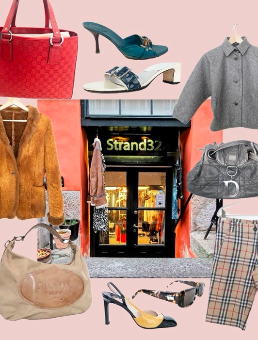
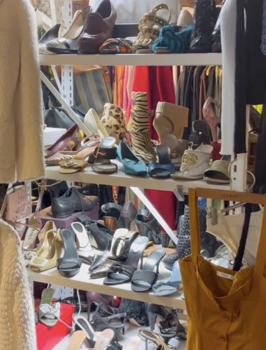

Om vores forsendelser
 Strand32 vil gerne nå længere ud i verden. Vi er ikke bare en Butik men en livsstil der går op i designermode. Vi vil gerne dele vores passioner og drømme med resten af verden. Vores formål er derfor at kunne sende vores vare til de mest kendte storbyer i hele verden. Disse storbyer er byer som London, New York der har en stor glæde for mode og designertøj. Vores kunder er for det meste udlændinge og vi vil derfor gerne nå ud til endnu flere. Hos Strand32 behandler vi hver ordre med største omhu for at sikre, at dine eksklusive secondhand high-end varer når dig i perfekt stand. Vi tilbyder sikker og pålidelig forsendelse både nationalt og internationalt, så du kan handle sjældne designerfund uanset din placering.Alle forsendelser er forsikrede og leveres med en tracking-kode,
så du kan følge din pakke hele vejen til din dør.
Kontakt os på [indsæt e-mail eller telefonnummer], så sikrer vi en løsning skræddersyet til dig.
Vi håber at vores brand kan nå ud til mange af jer der sidder derhjemme. Rune & Jeanette